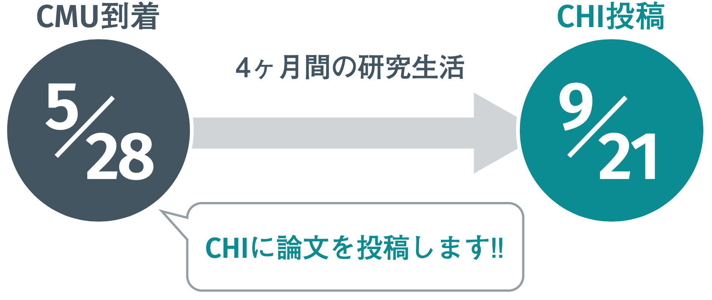
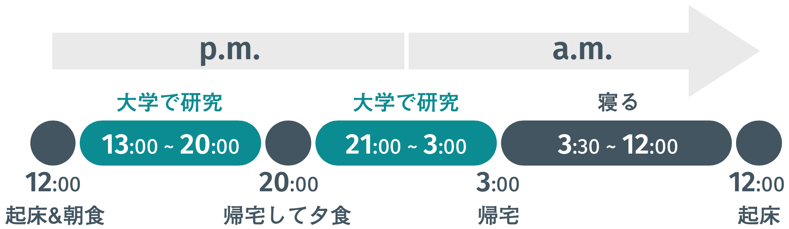
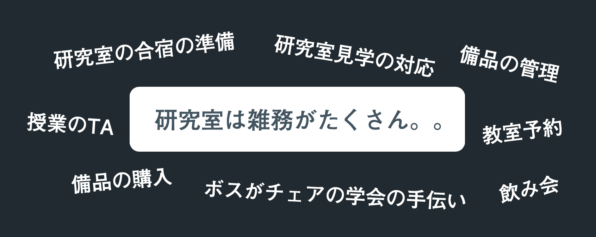
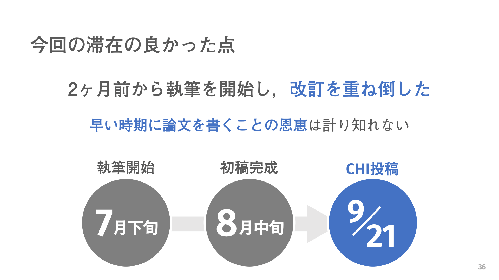

CMUで過ごした4ヶ月
Dec. 3rd, 2019
こんにちは．
縁あって研究留学 Advent Calendar 2019の3日目の記事を書かせていただくことになりました．カユカワ（@_wotipati_）です．
僕（当時修士1年）は2018年の5月から9月までアメリカのピッツバーグにあるカーネギーメロン大学（CMU: Carnegie Mellon University）へ研究インターンに行っておりました．
このインターンは滞在初日に「僕は9/21締め切りのCHIに投稿するためにここに来たんだ！絶対投稿します！」と宣言したところからスタートします．

初日に「4ヶ月後に論文を出します」と宣言．この時からCHI投稿を目標にスケジュールを立てる．
注）CHI（正式名称: ACM CHI Conference on Human Factors in Computing Systems）は，Human-Computer Interactionという分野の国際会議です．
この宣言を背負って僕は4ヶ月間頑張りました．この記事では，CMUでの生活を通じて僕が感じた"短期で海外で締め切りドリブンで研究をするメリット3つ"を書きます．
インターンの概要
本題に入る前に，ひとまずアドベントカレンダーのフォーマットに従って簡単に今回の滞在の概要を．
いつ行ったか：2018/5/28~9/23
当初は8/31までの予定でしたが，滞在先のボスに滞在費を負担していただいてCHI締め切り直後の9/23まで延長しました．
どこに行ったか：CMU, Robotics InstituteのCognitive Assistance Lab.
視覚障害者支援の研究をしているラボで，Accessibility研究者の浅川さんとCV研究者のKris先生がトップで運営されています．
どうやって行ったか：学部時代に共同研究していた東大（当時）の樋口さんの紹介
学部時代に共同研究をしていた樋口さんが当時CMUに1年間滞在されていて，その樋口さんに「CMU来ない？」と誘って頂きました．資金は大学に留学の渡航費滞在費を全額負担してくれる太っ腹な留学支援制度があったのでそれを利用しました．
では早速，今回の本題の"海外短期インターンのイイトコロ"を3つ順番にあげてきます．
1. 努力せずとも自然とめっちゃ頑張れる．
海外短期インターンのメリットはまずコレでしょう．
とにかく頑張れます．
とても頑張れます．
ここで強調しておきたいのは，"自然と頑張ることができる環境に身をおける"ということです．別に「辛くてホントはやめたいけど...，俺は努力するぜぇぇぇええーー！」って無理矢理自分を奮い立たせているわけじゃなくて，淡々と研究をするのが自然な状態になっていくんです．
研究留学というのは沢山の人の協力があって実現します．その人たちは僕が何かしら成果を持ち帰ってくることを楽しみに待っているからこそ費用面などで応援してくれるんです．そんな状況に置かれると，目の前にある時間を研究に使うか息抜きに使うかで悩む次元は軽々と超越します．研究一択です．"研究に没頭する生活に対して疑念を抱く余地が一切無くなる"というのは案外日本にいると味わうことが無い感覚で，この効果はとても大きかったです．研究とそれ以外の選択肢を天秤にかける隙すら与えられないと，案外ストレスなく研究に身を捧げることができるというのをこの滞在で知りました．生活の全てが研究と同化します（流石に言い過ぎか？でもそんな感覚）．
また，こういうマインドで旅立つわけですから，何かしらゴールを置いて突っ走るという行為と非常に相性がいいです．研究スパンは分野ごとに全く違うので一概には言えませんが，滞在スケジュールを論文の締め切りとリンクさせるのは，頑張りたい時にとても有効な手段だと思います．特に僕は初日の宣言以降，何をするにしても「それはCHI Paperに必要なことなのか，締め切りに間に合うのか，コスパ的にどうなのか」などを常に意識することで，限られた滞在期間内で最大限の価値を論文に載せることができるように日々を過ごしていました．
そんなこんなで，僕の1日のスケジュールは大体こんな感じでした．

1日のスケジュール．たっぷり寝て，たっぷり研究する．
普段，"辛いなと感じたときはスパッと研究活動をやめる．"というルールだけ自分に決めて気の向くままに作業をしているため，当然作業時間のばらつきはあってこの時間は目安です．途中で仮眠を取ったりもします（たくさん寝るの大事です）．なのでこの生活は頑張ってるし多少疲れるんですけど，辛くはないんです．なぜならちょっとでも辛いと感じた瞬間に一旦作業をやめるから．（この切り替えも非常に大事だと思います．そして辛さの沸点が低い僕はコレが得意でした．）
あと，そもそも海外だと日本に比べて研究以外に時間を割く選択肢がほぼ無いことも頑張りを加速させます．
ご飯は高いし美味しくないので，美味しい店を探そうという気にもなりません．
友達と飲みにいくことも少ないです（ラボメンバーはみんな6時になると帰ってしまう）．
まともなレコード屋がないのでレコード探す気にもなりません．
日本でそういった娯楽に費やしていた時間が海外では全てぽっかり空いてしまいます．普通に暇すぎるので，研究（←コレは割とオモシロイ）をしてしまいます．
まあコレは海外云々より僕のやる気の問題だったんじゃないかと今更になって思いますし，後悔がないわけではないですが，当時は「ｱｧ-...暇ﾀﾞﾅｧー...(´Д｀) =3... じゃあ研究でもするか」という感じで過ごす毎日．そりゃ進捗は日本にいる時より出ます．
（余談その1）ピッツバーグで食への興味を失い，餅と韓国海苔とチーズだけ食べる生活を繰り返していたので，僕はみるみる痩せ細っていきました．毎日一緒にいたのに突然樋口さんに「痩せたね...」と言われました．衝撃でした．そんな僕を見かねて，樋口さんは毎週僕にでっかいステーキを焼いてくれました．助かりました．ちなみに体重は運動とか全くしてないのに最終的に4ヶ月で6.5kg痩せました（丁度一割減りました）．
（余談その2）毎週のように樋口さんからステーキをご馳走になっていましたが，その代わりに毎回飲み会終盤にD進するように言われてました．博士課程へ進む気なんぞ毛頭なかった当時の僕は「わかりました．CHI通ったら考えるんで，通せるように樋口さん明日からまた頑張りましょう（乾杯）」と適当にやり過ごしてました（結果，樋口さんの思惑通りまんまとD進してしまった）．
（余談その3）僕の衝撃の食生活を耳にして不憫に思ったのか，浅川さんにもイロイロお店へ連れて行ってもらいました．高級ハンバーガーとかカニとかエビとかご馳走してくれました．そういえば，とあるお店から浅川さんの自宅まで15km近くを3時間以上かけて2人で一緒に歩いて帰ったら，翌日筋肉痛で2人とも死にました．
僕の作業環境．ひたすらにココで作業していた．
樋口さんが毎週のように振舞ってくれた最強の肉．
「短期海外留学のメリットを3つ」と言いましたが，この「1. めっちゃ頑張れる」がダントツで大きいので，残り二つは短めに．
2. 研究室の雑務を全て無視できる．
日本の研究室にいたら降りかかってくる雑務を全て無視できるのも海外留学のイイトコロです．
日本にいると研究室から雑務が結構降ってきます．しかも研究室に頻繁にくる真面目な人が雑務を任され，あんまり来ない人が雑務を回避しているというこの不条理．あと，こうした雑務を言い訳に研究をサボれてしまうのも地味に良くないんですよね

学生を襲う雑務の数々．雑務で一日潰れることすらある．
しかし，留学中ならばその全ての雑務を「今留学中なんで．すいません．」の一言で一蹴できます（その分雑務を押し付けてしまった同期達ごめん．ありがとう）．
日々の雑務に悩まされているみなさん．思い切って海外へ逃亡してしまうのも一つの手です．
3. 論文の英語面でのサポートが途轍もない．
悔しい限りなんですが，やはりネイティブに論文執筆を手伝ってもらえる効果はやはり強力です．
特に僕は論文のタイトルを考えている時にコレを痛感しました．
初め，論文の仮タイトルはこうでした．
"Sound-based Path Clearing for Blind People with Pedestrian Collision Prediction"
それが翌日，Kris先生の手によってこうなりました．
"BBeep: A Sonic Collision Avoidance System for Blind Travellers and Nearby Pedestrians"
嗚呼...
何故，そんなタイトルが思いつくんでしょうか．
何故，"Sonic"という単語が出てくるんでしょうか...
日本人だったら絶対"Sound-based"としてしまいます．
というかそもそも"Sonic"ってそういう風に使ってよかったんですね．
そして"Blind Travellers"という小洒落た発想は一体何処から...
確かにスーツケース型のシステムを提案しているし，空港内で評価実験を行なっているし，まさしく"Travellers"じゃないですか．
このタイトルのおかげでシステムをスーツケース型にしているのもなんかそれっぽく見えてきました．
やられました．このタイトルは英文校正じゃ絶対に行き着かないです．
（余談その4）最初Kris先生が考えたCute Nameは"BeepBeep"でした．ただ，調べると同じCute Nameの論文が見つかったので，「じゃあBBeepにしよう」とノリで決まりました．たまに「BBeepの最初のBってなんですか？」と聞かれるのですが，実は何にも意味がないです．
本文においても英文校正は文法やコロケーションのミスなどセンテンスレベルの直しがほとんどです．その反面，一緒に研究をやってきて，中身を完璧に理解しているネイティブ共著者の修正はまさにプライスレスです．論理展開からパラグラフ構成からがっつり修正してくれます．
おわりに
長々喋ってきましたが，僕が感じた海外短期インターンのメリットはこんな感じです．
要するに「海外インターンはめっちゃ研究捗るからオススメだよ!」ってことです．
メリットをあげるならデメリットもあげた方がいいかなとも思いイロイロ考えてみましたが，なんも浮かばなかったです．ご飯がイマイチとか娯楽が無いとかも（体重は1割失いましたが）正直4ヶ月程度の滞在ならそこまで影響も無いです（1年間滞在してたらまた話が違ったと思う）．そんなに深く考えずに「3ヶ月くらいならまあ盛大にミスっても大したことないか」という感じで気軽にトライするのもいいと思います．特に修士1年辺りに就活が忙しくなる前に行くのオススメです．
ここまできて今更ですが，研究生活はホント人それぞれだと思います．個人の性格や体力，滞在期間やラボの雰囲気などなど様々なパラメタで最適な生活スタイルは変わっていくため，この生活を人にオススメすることはしないです．
例えば半年以上滞在する場合は，こんな生活を続けていたら身体を壊しそうです．それよりも研究と生活のバランスを取りつつ研究以外にもイロイロな楽しみを見つけることで，単なる成果以外のものも持ち帰ることができると思います（想像ですが）．
「なんやこの灰色研究生活．終わってんな (*´・∀・)」って思う人もいるかと思います．それでもいいです．
あくまで十人十色，千差万別な研究生活の一つの具体例としてお伝えしただけですので，そのように受け取って頂けると幸いです．
これから研究留学 Advent Calendar 2019には他にも沢山楽しい具体例が載せられていくと思います．是非ご覧になってみてください（2年前に企画された研究留学 Advent Calendar 2017もあります．こちらも物凄く面白い）．
こういうブログ形式で文章を書くのは初めてで正直かなり苦労したんで，どこかでお会いする機会があった時に「アドベントカレンダー読みましたよ!」と言ってもらえるとかなり嬉しいです．
本記事のメインコンテンツは以上です．
最後までお読みいただき，ありがとうございました．
おまけ: 個人的な謝辞と滞在の思い出
研究面に限らず，ピッツバーグでの生活をサポートしてくれたり彩りを与えてくれた皆様に感謝します（敬称略）．
Co-authors: K. Higuchi, J. Guerreiro, S. Morishima, Y. Sato, K. Kris, and C. Asakawa.
Beer Friends: H. Mamiya, K. Narumi, A. Minami, K. Saito, D. Kase, Y. Morimoto, and A. Plopski.
Cognitive Assistance Lab: S. Asakawa, T. Ishihara, D. Sato, E. Ohn-Bar, J. Campos, A. Manglik, Z. Jimuyang, M. Sugimoto, and J. Pan.
SGU: M. Ikeda.
樋口さんとJoãoには沢山お世話になりました．ありがとうございます．ただ，樋口さんには土日だろうが御構い無しに「樋口さん今日いつラボにいらっしゃいますか？」とSlackで聞いて，ラボへ来るように圧をかけてしまってすいませんでした．Joãoには，世の中にはこんなナイスガイがいるのかと感動したのを覚えています．僕と樋口さんの論文が理不尽なReviewでRejectされて落ち込んでる時にJoãoが「まあビールでも飲みに行こうぜ」と誘ってくれて，3人でGrist Houseに行ったのも懐かしいです．
浅川さんもすごい人でした．到着初日のパーティ（後述）で初めてお会いした時に「では私と一緒に来年グラスゴー（目標の学会の開催地）に行きましょう」と言ってくれてめちゃくちゃ頼もしかったのを覚えております．沙希さんも現地の生活をイロイロ教えてくれてありがとうございます．ただ，沙希さんの運転はちょっと怖くて助手席の僕は命の危険を多少感じてました．
Beer Friendsの皆様，美味しいビールをありがとうございます．到着したその日に，時差ボケと滞在への不安で疲弊している中パーティに呼びだされ，ビール22Lを7人で飲み干したのはいい思い出です．その後，酔っ払い達の雑な道案内を頼りに（到着直後なのでスマホは未契約），深夜のピッツバーグを一人で歩いて帰ったのもいい思い出です．鳴海さんからは"ｲｷﾙ"という概念を教わりました．これまで僕の周りは謙虚な人が多かったので新鮮でした．南さんはどうしても絡みが面倒な酔っ払い女という印象が先行してしまいますが，あの年で海外に出て研究に触れてイロイロ考えている点は尊敬しております．間宮さんはビール片手にニヤニヤしてる姿しか思い出すことができないです．
僕の知り合いでもないのに最後の最後のこんなところまで読んでくれた物好きな方，どうもありがとうございます．お礼の情報と言ってはなんですが，ピッツバーグはビールが大変美味しいので，もしCMUとかに行く機会がありましたら，是非地元のBreweryを訪れてビールを飲んでみてください．Dancing Gnome, Grist House, East Endあたりに行っておけば間違いないです．
Appendix
今回の滞在については以前CHI勉強会2019で，研究内容や滞在中のスケジュール（いつ頃プロトタイプシステムができて，いつ頃から論文を書き始めたなど）を発表させて頂く機会があり，その時のスライドも公開されているので，よろしければそちらもご覧ください．

CHI勉強会のスライド（一部抜粋）